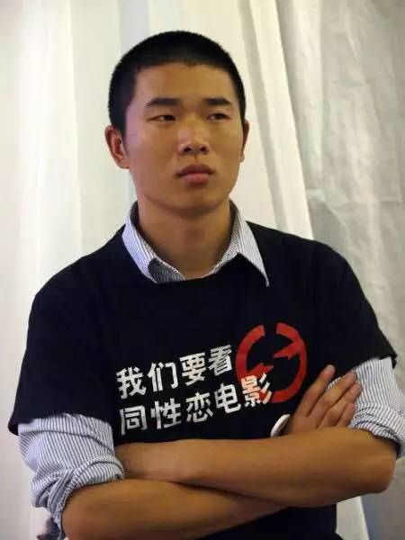
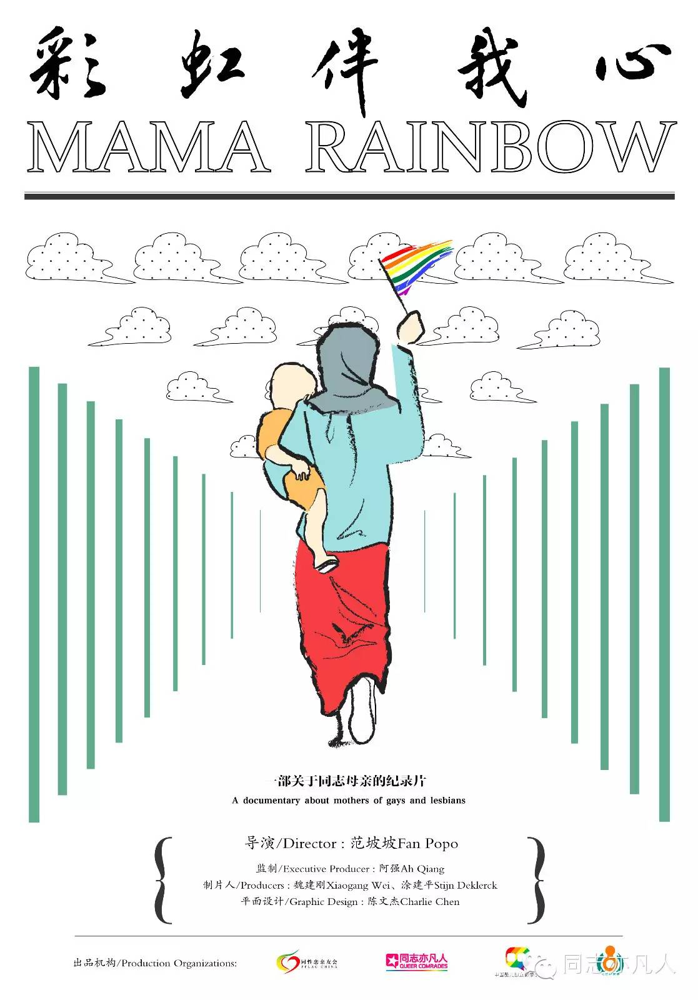

导演：范坡坡
类型: 纪录片 / 同性
制片国家/地区: 中国大陆
语言: 汉语普通话
上映日期: 2016年
片长: 20分钟
影片简介
在中国，大部分家庭难以面对同性恋、双性恋、跨性别的孩子。很多父母把子女当做自己的财产，而父亲在家庭中更是扮演着权威角色。男权、专制、保守，这些名词就是爸爸的名字？
四年前《彩虹伴我心》里的母亲们感动了很多观众，直到现在我们看到同志家人的形象里母亲仍然占多数，很多人都在问“爸爸去哪儿了？”于是我们找来六位父亲和家人一起现身讲述他们的故事。 不同的地域、不同的文化背景、生活经验，面对孩子的“出柜”他们也有过复杂的心情
而现在，除了接受自己的孩子，他们还大胆迈出了你们难以想象的一步！两个为期两天的戏剧工作坊中，面临巨大挑战，彩虹老爸们将展现让你意想不到的演技大爆发！打破固有的男性气质规范，解放僵硬的性取向藩篱，你看到的是平凡而不同的爸爸形象！
与此同时，剧场外面有着更加精彩的世界。越来越多的人参与为同志亲友争取平等权益，用实际行动将爱进行到底
在线观看
感谢腾讯视频联合首发
点击阅读原文跳转至腾讯视频页面
关于导演

范坡坡，青年同志独立导演，毕业于北京电影学院。主要作品有《新前门大街》、《柜族》、《舞娘》、《彩虹伴我心》、《来自阴道》，话题囊括同性婚姻、同志运动、同志家庭、变装表演、女权主义等。希望借助影像之力让不同的群体彼此看到
除了影像创作，他还曾组织中国酷儿影像巡展，目前是爱酷电影周的组委会成员，酷儿大学影像训练营的培训员。2011年获得第22届香港同志影展玲珑大奖，是该奖项史上最年轻的得主。2014年获得亚洲同志里程碑年度“视觉灵感”大奖
背后故事
2012年我拍摄了纪录片《彩虹伴我心》

这是一部关于中国的妈妈和她们的同志子女的作品。当时因为没有找到合适拍摄的爸爸，所以选择了这样的题材
而其时我心存侥幸，与女性一起工作让我觉得更加轻松自如，影片也取得了不错的社会效应，长版在全球几十个电影节展映，短版在网络上引起很多热议，并获得凤凰纪录片大奖：最佳短纪录片提名
2014年制片人找到我想做关于爸爸的片子，开始我还有些抗拒。一来我还没有克服自己的“直男恐惧症”，二来也不想重复自己的风格。后来经过一番探讨，我们想到了用戏剧工作坊来给这些爸爸们一些挑战，让影片也有一些新意。没想到他们都完成得特别出色，也让我对父亲的形象有了新的认识
所以拍摄这个影片也是一个治愈我“直男恐惧症”的疗程，而《彩虹老爸》这个作品，就像是一张张X光透视片组合而成
随后我们还将推出长版的《彩虹伴我行》进行线下放映，届时大家可以到现场观看